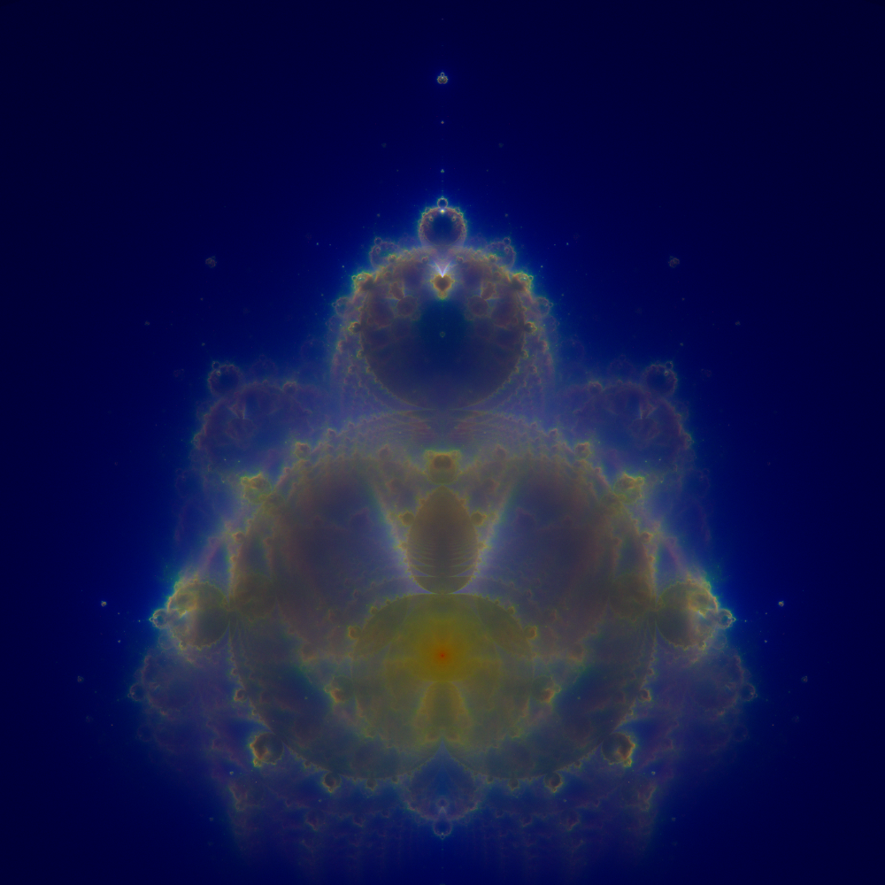
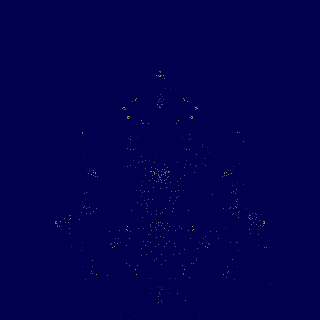

SedaiBasic · demo
Lo stesso sorgente compilato in bytecode, in codice macchina e in WebAssembly. Le tre versioni disegnano la stessa immagine, byte per byte. Quella in WebAssembly gira qui sotto, nel browser, senza installare niente.

La pagina interattiva è un file solo: porta dentro di sé il modulo WebAssembly da 27 KB. Tocca l'immagine per zoomare sul punto che hai toccato.
L'immagine di Mandelbrot che tutti conoscono colora ogni punto in base a quanto ci mette a scappare. Questa fa una domanda diversa — dove passano le orbite che scappano, mentre se ne vanno — e risponde lanciando milioni di punti a caso sul piano, seguendo quelli che sfuggono e contando quante volte ogni pixel viene attraversato. Il risultato è una mappa di densità. Girata di un quarto di giro, somiglia a una figura seduta: da lì il nome.

Ogni canale conta una durata diversa dell'orbita, e le tre soglie sono frazioni del tetto di iterazioni:
Non è una decorazione: è una lettura dei dati. Premendo C si scambiano i canali
e si guarda la stessa immagine chiedendole un'altra cosa.
SedaiBasic compila lo stesso file in bytecode e lo esegue con un interprete, oppure compila i cicli caldi in codice macchina mentre gira (JIT), oppure compila le funzioni intere prima di partire (AOT), oppure emette un modulo WebAssembly che gira nel browser senza interprete e senza libreria di supporto.
Che siano davvero la stessa cosa non è un'affermazione: è un controllo. Le quattro versioni tracciano le stesse orbite e i file che producono hanno lo stesso hash SHA-256. Basterebbe che un motore arrotondasse diversamente in un punto, e un'orbita supererebbe il raggio di fuga un passo prima: le immagini si separerebbero.
| due milioni di orbite | secondi | orbite/s | contro l'interprete |
|---|---|---|---|
| interprete bytecode | 5,11 | 391 000 | — |
| WebAssembly (browser) | 2,17 | 923 000 | 2,4× |
| JIT | 1,43 | 1 401 000 | 3,6× |
| AOT | 1,45 | 1 381 000 | 3,5× |
Solo calcolo, niente da disegnare. Dal vivo il vantaggio è più grande, e il motivo è che il ritmo dei fotogrammi è un budget: chi dipinge in fretta ha più tempo che avanza per calcolare. A 400×400 un ridisegno costa 9 ms interpretato e 1 ms compilato, e in sei secondi l'interprete traccia 730 000 orbite dove l'AOT ne traccia 7 400 000: dieci volte tanto, allo stesso identico numero di fotogrammi al secondo.
Ed è la parte più utile della storia, perché nessuno dei due si vedeva leggendo il codice.
Il primo. PSet — accendere un pixel — non aveva una
discesa in codice macchina nel compilatore AOT: ogni pixel passava da una chiamata di servizio che
svuotava e ricaricava tutti i registri. 60 nanosecondi contro i 4 dell'interprete:
il disegno era una tassa che colpiva più duramente il motore più veloce. Ora è una
scrittura in linea, 1,1 ns.
Il secondo, e più istruttivo. Chiuso il primo, l'AOT teneva ancora 43 fotogrammi al secondo dove gli altri due ne tenevano 58 — e tracciava meno orbite dell'interprete. La causa era l'opcode accanto:RGB()era rimasta una chiamata di servizio, e una chiamata di servizio invalida il descrittore su cui laPSetappoggia la sua scrittura veloce. Le due sono una coppia —PSet (x,y), RGB(r,g,b)è come dipinge qualunque programma grafico — e coprirne una sola non ne copriva nessuna. Il ciclo dei pixel è passato da 20,5 ms a 0,76 ms per fotogramma.
Uno zoom sul Mandelbrot restringe sia quello che disegni sia quello che calcoli. Qui no: la finestra si restringe ma il campionamento non può, perché un'orbita che attraversa la tua finestra può essere partita da qualunque punto del piano. Continui a tracciare tutto e butti via quello che manca il bersaglio.
| zoom | orbite/s | orbite accettate | pixel più luminoso |
|---|---|---|---|
| ×1 | 338 123 | 328 270 | 621 |
| ×4 | 338 983 | 328 270 | 34 |
| ×16 | 364 298 | 328 270 | 7 |
Il programma fa esattamente lo stesso lavoro a ogni livello di zoom — anzi, un filo di più in fretta, perché meno punti atterrano e c'è meno da scrivere. Crolla solo quanto di quel lavoro finisce dove stai guardando. È il problema che il campionamento di Metropolis-Hastings esiste per risolvere, e questa demo è deliberatamente uniforme: quello che vedi è il problema, non la soluzione.
L'algoritmo intero è una sola subroutine e sta in una schermata; tutto quello che c'è sopra è preparazione e tutto quello che c'è sotto è presentazione. L'intestazione elenca le cinque cose facili da sbagliare — l'orbita che va tenuta in sospeso prima di essere accumulata, le due regioni che non scappano mai, la simmetria speculare, la soglia minima e la curva dei toni — e ognuna è richiamata alla riga dove conta. In fondo c'è l'elenco delle ottimizzazioni non fatte, con il motivo di ciascuna.